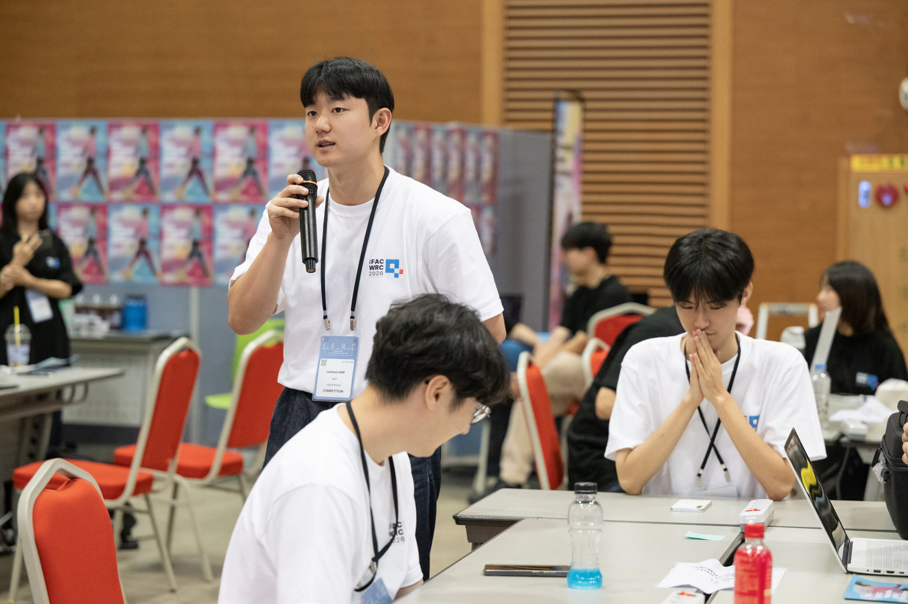
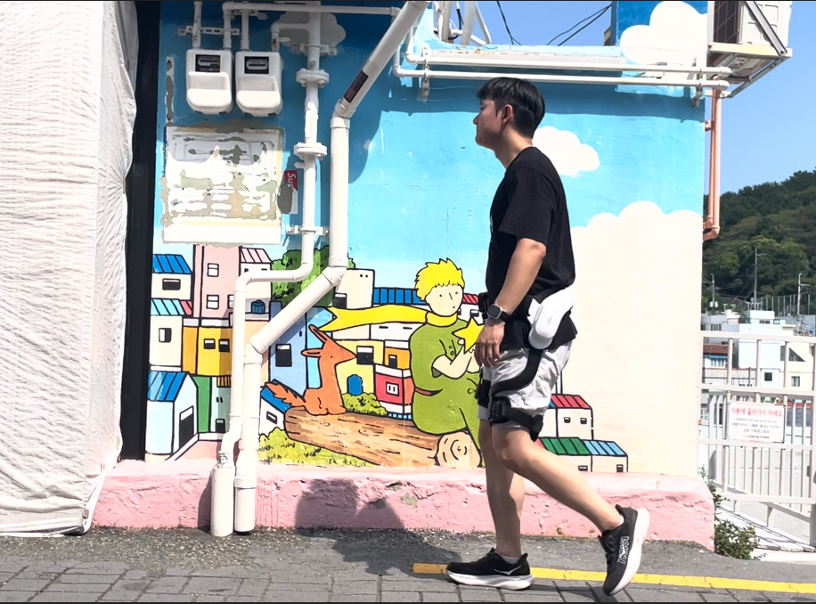
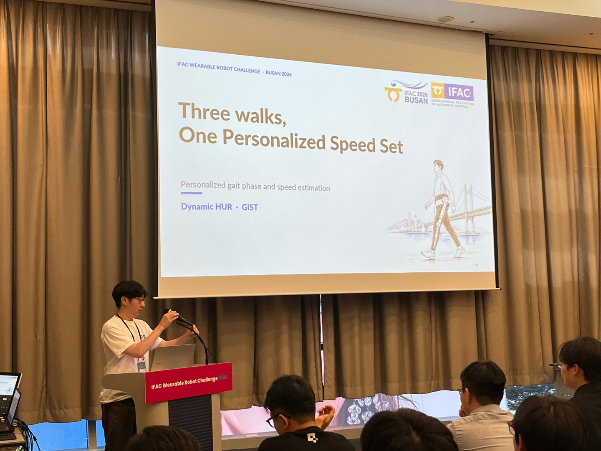
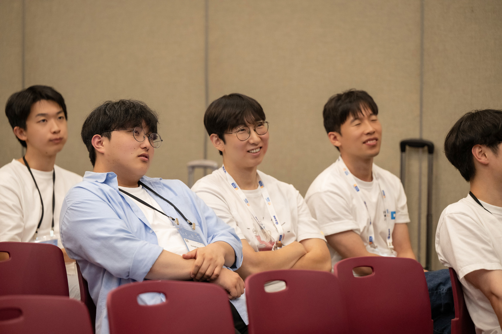
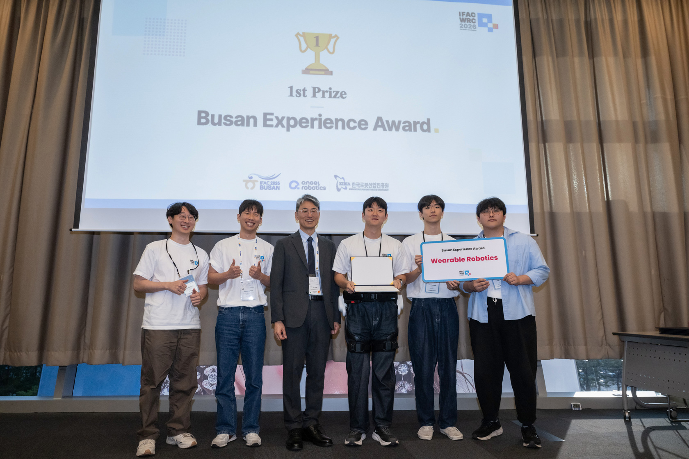
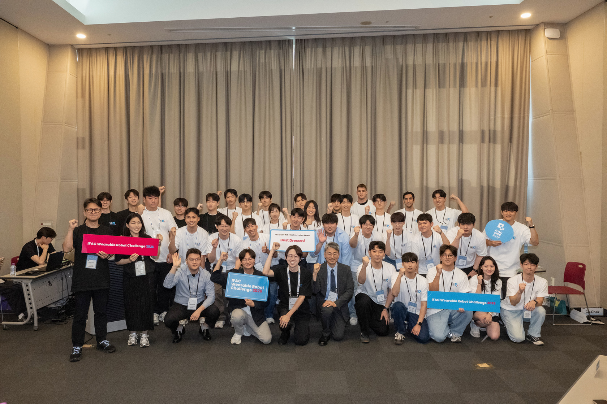
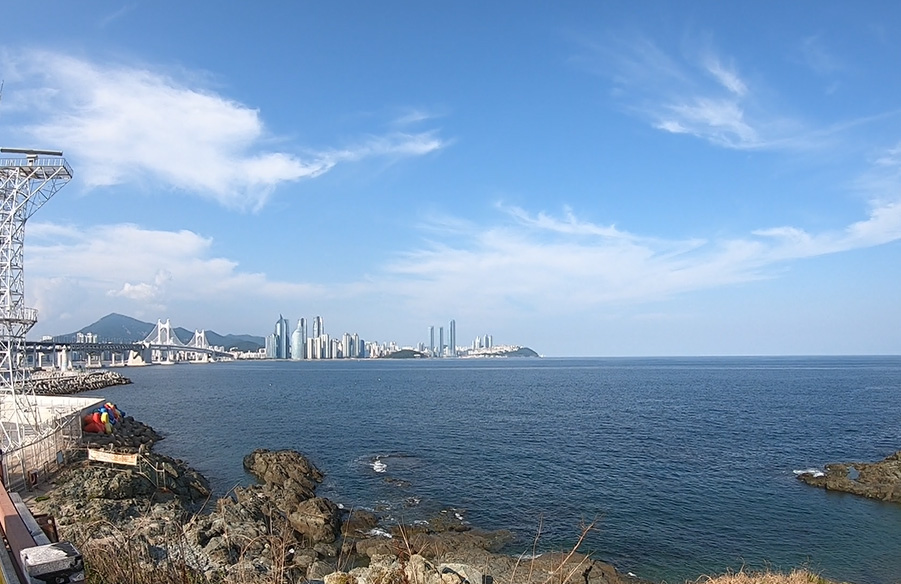

[2026/08/26] IFAC 2026 Wearable Robotics Challenge 참가
작성자: 김성환 (학사과정 인턴)
2026년 8월, 부산에서 열린 IFAC 2026 World Congress 기간 중 Wearable Robotics Challenge에 "Dynamic HUR" 팀으로 참가하였습니다. 이번 Challenge에서는 KAIST의 3팀을 포함하여 전 세계에서 총 10팀이 최종 참가를 하였고, Angel Robotics의 H10 hip exoskeleton을 직접 착용하고 활용하면서, 크게 두 가지 활동을 진행했습니다.
첫 번째는 H10을 활용해 부산을 돌아다니며 웨어러블 로봇 홍보 영상을 제작하는 것,
두 번째는 H10에 다양한 알고리즘을 적용해보고 이 과정을 최종 발표까지 진행하는 것이었습니다.
연구실에서 기존에 연구해 온 보행 관련 알고리즘을 실제 H10에 적용하고 테스트하여 최종 발표까지 진행하는 것이었습니다.
논문이나 발표 세션을 주로 보러 다녔던 이전 학회와 달리, 이번에는 며칠 동안 직접 로봇을 착용하고 코드를 수정하고, 데이터를 확인하고, 영상을 만들고, 마지막에는 발표까지 해야 했습니다. 그만큼 꽤 정신없이 지나간 일정이었지만, 개인적으로는 웨어러블 로봇 연구가 실제 하드웨어 위에서 어떻게 구현되는 지를 가까이에서 경험해 볼 수 있었던 시간이었습니다.
[2026/08/23] 첫째 날, H10을 입고 부산으로!
Challenge 첫날에는 오리엔테이션을 통해서 각 팀을 소개하고, 이번 대회에서 사용할 Angel Robotics H10을 전달받았습니다. 또한 H10 개발과 관련한 설명을 들었습니다.

평소 연구실에서도 웨어러블 로봇을 다루고 있지만, 정해진 장소에서 실험하는 것과 실제 야외에서 로봇을 착용하고 여러 지형을 돌아다니는 것은 또 다른 경험이었습니다. 장비를 전달받은 뒤 착용 방법과 기본적인 작동 방식을 확인하고, 바로 부산 곳곳을 돌아다니며 영상 촬영을 시작했습니다.

이번 영상에서 보여주고 싶었던 것은 단순히 “로봇을 착용하고 걷는 모습”만은 아니었습니다. 웨어러블 로봇을 착용했을 때 사용자가 더 다양한 장소를 자유롭게 이동할 수 있다는 이미지를 보여주고 싶었고, 그래서 영상의 전체적인 방향도
With H10, go farther, go higher, explore more of Busan.
이라는 흐름으로 잡았습니다 (나름 부산 출신이다보니 콘티를 더 수월하게 짤 수 있지 않았나 싶습니다 ㅎㅎ).
평지에서 걷는 장면뿐만 아니라 경사나 계단처럼 조금 더 힘이 필요한 환경, 부산의 풍경을 함께 보여줄 수 있는 장소 등을 돌아다니며 촬영했습니다. GoPro와 휴대폰을 함께 사용해 여러 각도에서 촬영하다 보니 생각보다 촬영해야 할 장면이 많았고, 같은 동작도 영상에서 자연스럽게 보이도록 몇 번씩 다시 찍었습니다.


하루 종일 로봇을 착용하고 부산을 돌아다니다 보니 영상에 찍히지 않은 시행착오도 꽤 많았습니다. 어떤 장면이 실제 영상에서 가장 잘 보일지 계속 고민해야 했고, 야외에서는 사람이나 주변 환경도 함께 고려해야 했습니다. 무엇보다 살인적인 더위에 등이 조금만 햇빛에 노출되어도 살이 따가울 정도였다보니 촬영 막바지는 둘 다 탈진에 가까워지기도 했습니다. 그래도 연구실에서 보던 로봇이 부산의 실제 환경 속에서 움직이는 모습을 카메라로 담고 있으니 꽤 색다른 느낌이었습니다.
[2026/08/24] 둘째 날, 이번에는 영상 편집!
첫날 촬영을 끝냈다고 해서 영상 제작이 끝난 것은 아니었습니다. 영상 제출 기한이 촬영 바로 다음 날 오후 4시까지였기 때문에, 탈진한 체력을 조금이라도 회복해서 편집을 시작해야 했습니다. 촬영해 온 영상들을 모두 모아 H10의 기능을 기술적으로 설명하는 것과 부산을 돌아다니는 모습을 자연스럽게 보여주는 것 사이의 균형을 맞추기 위해 어떤 장면을 사용할지 고르고, 순서를 정하고, 자막과 음악을 넣어 최종 영상을 완성해야 했습니다. 심지어 편집 툴이 생각보다 커서 개인 노트북에서 안 되서 PC방에서 작업을 마무리 하게 되었습니다.
그렇게 첫날 하루 동안 촬영한 영상들을 정리해 최종 제출 영상을 완성했습니다.
최종 영상:

결과물을 다 만들고 나서 첫날 촬영본과 비교해 보니, 짧은 영상 하나를 만드는 데에도 촬영부터 편집까지 생각보다 많은 판단이 필요하다는 것을 새삼 느낄 수 있었습니다.
하지만 아직 Challenge는 절반도 끝나지 않았습니다. 영상 제출이 끝난 뒤부터는 이제 H10을 정말 “연구용 로봇”으로 사용해 볼 차례였습니다.
[2026/08/25] 셋째 날, 이제 진짜 알고리즘을 올려보자
화요일부터는 H10의 동작을 테스트하고, 연구실에서 기존에 연구해 온 명주 선배의 ICCAS 논문 알고리즘을 실제 H10 시스템에 적용해 테스트 해보는 작업을 진행했습니다. (논문 많은 관심 부탁드립니다! https://services.arxiv.org/html/submission/8171890/view)
논문이나 시뮬레이션에서 알고리즘을 보는 것과 실제 로봇에서 실행하는 것은 역시 상당히 달랐습니다. 코드가 실행된다고 해서 바로 사람이 착용하고 원하는 대로 움직일 수 있는 것은 아니었고, H10에서 들어오는 센서 값과 로봇의 상태를 확인하면서 하나씩 동작을 검증해야 했습니다. 초반에는 토크 자체가 출력이 안 나오는 문제가 있었고, 코드를 수정하여 잘 작동하는 것도 보였습니다.

(당시 이유를 모른 채 모터에 토크가 들어오지 않고 있는 상황)
실험을 반복하면서 알고리즘의 출력이 실제 보행과 어떻게 연결되는지 확인했고, 사람이 착용한 상태에서 동작이 자연스러운지도 함께 살펴보았습니다. 또한, EMG 센서를 이용하여 근전도 신호가 잘 취득되는지도 확인해야했습니다.
웨어러블 로봇은 일반적인 로봇과 달리 사람이 시스템 안에 직접 포함되어 있다는 점이 특히 크게 느껴졌습니다. 같은 제어 입력이라도 착용자의 움직임과 보행 속도에 따라 체감이 달라질 수 있고, 무엇보다 로봇이 예상하지 못한 방향으로 동작하지 않도록 안전하게 테스트하는 과정이 중요했습니다.

(보행 추정을 기반으로 토크 적용 시점을 변경하여 H10에 적용한 테스트 영상 )
처음에는 단순히 “논문의 알고리즘을 H10에 적용한다” 정도로 생각했지만, 실제로는 센서 확인, 통신, 로봇 상태 확인, 파라미터 조정, 착용 테스트가 모두 연결되어 있었습니다. 개인적으로는 이번 Challenge에서 가장 연구 다운 경험을 많이 했던 날이었던 것 같습니다.
[2026/08/26] 마지막 테스트, 발표, 그리고...
수요일에는 전날에 이어 알고리즘 테스트를 계속 진행하는 동시에, 최종 발표를 준비했습니다.
며칠 동안 어떤 방식으로 H10을 사용했고, 어떤 알고리즘을 적용했으며, 실제 테스트에서 어떤 결과를 확인했는지를 짧은 발표 안에 정리해야 했습니다. 특히 이번 Challenge는 단순히 결과만 보여주는 것이 아니라, 알고리즘을 어떤 방식으로 실제 웨어러블 로봇에 통합했는지를 설명하는 것이 중요했습니다. 며칠 전까지만 해도 부산을 돌아다니며 영상을 촬영하고 있었는데, 마지막 날에는 같은 H10을 두고 센서와 알고리즘, 실험 결과를 설명하고 있으니 꽤 짧은 기간 안에 여러 가지 경험을 한 셈입니다.
그리고 드디어 최종 발표!

발표 하고 계신 명주 선배 모습. 그리고

그 발표를 즐겁게 감상하며 듣고 있는 우리 Dynamic HUR 팀원들.
모든 팀의 발표가 끝난 뒤에는 시상식이 진행되었습니다.
그리고 저희 팀은 Busan Experience Award (전체 1위)를 수상했습니다! 🎉

영상 촬영을 위해 첫날부터 부산을 정말 많이 돌아다녔던 만큼, 이름부터 저희 활동과 잘 어울리는 상을 받은 것 같습니다. 며칠 동안 촬영과 편집, 코딩, 로봇 테스트, 발표 준비가 계속되는 일정을 버티다보니 시상식이 끝난 뒤에야 “이제 진짜 끝났구나” 라는 생각이 들었습니다.
Challenge를 마치며...
이번 Wearable Robotics Challenge는 이전에 참석했던 학회와는 상당히 다른 경험이었습니다.
기존에는 발표나 포스터를 보면서 다른 연구자들의 연구를 배우는 것이 학회의 주요 경험이었다면, 이번에는 제한된 시간 안에 직접 로봇을 사용해 결과물을 만들어야 하는 참가자의 입장에서 학회를 경험했습니다.
특히 H10을 부산의 실제 환경에서 착용하고 움직여 본 것, 연구실에서 개발한 알고리즘을 실제 웨어러블 로봇에 적용해 본 것, 그리고 그 과정을 다른 사람들에게 설명하기 위한 발표로 정리해 본 것이 기억에 남습니다.
웨어러블 로봇에서는 좋은 기구 설계나 좋은 제어 알고리즘 하나만으로 모든 문제가 해결되는 것이 아니라, 센서와 하드웨어, 제어 알고리즘, 착용자, 그리고 실제 사용 환경까지 모두 함께 고려해야 한다는 점도 다시 한번 느낄 수 있었습니다.
짧은 기간 동안 정말 많은 일을 해야 해서 당시에는 정신없이 지나갔지만, 돌아보면 웨어러블 로봇을 연구하고 있는 입장에서 꽤 값진 경험이었습니다.

그리고 마지막으로...
열심히 돌아다니면서 찍은 시원한 풍경 하나 공유하며 글을 마칩니다. 😄

Dynamic HUR 팀원
조권승, 차명주, 김래헌, 배성환, 김성환